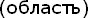
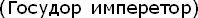
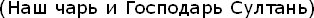
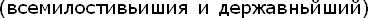
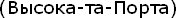
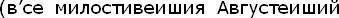
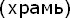
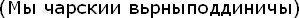

Birinci mesele, niçin Bulgar ve Sırp-Hırvatça dilekçelerinde Rusizmlere rastlanıldığıdır. 17. asırdan beri Balkan Slavları, Rusya'yı Ortodoksluğun merkezi olarak görme eğilimindedir; bu eğilim gelecek asırlarda şiddetinden kaybedecekse de, o sırada Fener Patrikhanesi'nin tutumu, Balkan Slavlarında Hellen asıllı ruhbana karşı bir nefret uyandırdı. Bu nedenle henüz ulusçu akımlar yeterince kuvvetli olmasa da, Sırp ve Bulgar ruhban Rusya ile ilişkideydi. 17. asrın ortalarında Rus kilise reformunu sürükleyen Rus Patriği Nikon ve Arseniy Suhanov gibileri dua kitaplarının ıslahı için Sırp manastırlarındaki yazma dua kitapları ve eserleri getirtiyor, rahipler bazen Rusya'ya celbediliyor ve bazen sınırdan kendilerine harçlık, bağış ve özellikle Rusça dua kitabı ve diğer eserler verilerek memleketlerine dönüyorlardı.[218] 19. yüzyılda Rusya'da okuyan öğretmenler de Sırp ve Bulgar okullarında ders veriyordu. Moskova ile yapılan kiliseye, maarife ve politikaya ilişkin yazışmaların (Gos. Arkhiv, Drevnih Aktov, Moskova'da bu yazışma serileri kısmen tetkik edilmiş olup, fakat büyük ölçüde araştırmayı beklemektedir), Balkan Slavlarının dilekçe üslûbunu, özellikle titulatürü (elkâb) etkilediği, bazı Rusça terimlerin ve kalıpların kelimelerin yerini aldığı görülüyor. Meselâ, Tırnova Sancağı Svişçov kasabası sakinleri, 16 Nisan 1858 tarihli kilise inşa izni dilekçelerinde, Tırnova'dan Oblast

olarak (alt idarî bölge) Rusça bir deyimle söz eder, sancak demezler (Belge 1).[219] Sultan Abdülmecid Han Efendimiz deyiminden evvel Rusya imparatorları için kullanılan Gosudor imperator

deyimini Gospodár Sultan Naş Tsari Gospodár Sultan

gibi kullanırlar. Fakat bu arada Osmanlı titulatürünün Bulgarcaya doğru tercümesi de görülür; meselâ "inayetlû devletlû" için, "v'semilostiveîşiy i derjavne işii"

deyimi kullanılır. Eski Bulgar ananesine uyularak padişahtan, Tsar, Bâbıâlî'den ise, Ruslar gibi Verhovniy Dvor' şeklinde değil Visoka-ta-Porta

diye söz ediliyor. Kuşkusuz 1858 Mart olarak tarihlenen Lofçe (Lofçensk) kazası Kireçli köyü ahalîsinin kilise inşâ dilekçesinde vakıf = vakof gibi deyimlerin görülmesi basit bir dil etkisinden çok, müessesenin Osmanlı yönetimiyle benimsenmesinden ileri gelir (Belge 2).[220] Buna karşılık 1 Mart 1858 tarihli Plevne Hıristiyanlarının dilekçesinde Osmanlı sultanı için kullanılan elkâbda olduğu gibi tamamen Rusizm tesiri vardır: "v'se milostiveişiy Avgusteişiy naş Tsar i Gospodár"

[221] (Belge 3) Plevnelilerin dilekçelerinde Osmanlı (otomanskiya) Hıristiyanlarından söz edildiği halde, yukarıda sözünü ettiğimiz Lofçe-Kireçli köyü sakinleri kendilerinden Hristiyani Turtsiyi, Türkiye Hıristiyanları diye söz ederler. Daha geleneksel ve kapalı bir yörede imparatorluğun Türkiye olarak vasıflandırıldığı ve Bulgar halk belleğinde öyle yaşadığı görülüyor (7. satır). Plevne'ye (Pleven) ait dilekçede, izin istenen kilise binasının uzunluğu 45 arşın, genişliği 22 arşın ve yüksekliği 25 arşın olarak belirtiliyor. Bir metropoliten kilise olacağı anlaşılan binadan hram'

diye söz edilir. Bu bir ortak Eski Slovin tabiri olmakla birlikte, Rusça etkinliği dolayısıyla kullanılıyor. 30 Nisan 1858 tarihli dilekçe ise Bosna Eparklığı (sancak yerine), Banyaluka kaymakamlığı, (kaymakamluk) Derbent nahiyesi, Venski köyü Hıristiyan halkınındır.[222] Buradaki Rusizmler daha azdır (Fakat Sırp-Hırvatça konuşulan yerlerde halk dilinin yazıya geçirilmesinde Rus dili ve edebiyatının etkisi önemliydi). Burada "Mıy Tsarskii Vernii poddinnitsi - biz çarın (sultan) sadık tebaaları"

deyimi sentaks ve ibare olarak bir Rusizmdir (Belge 4).